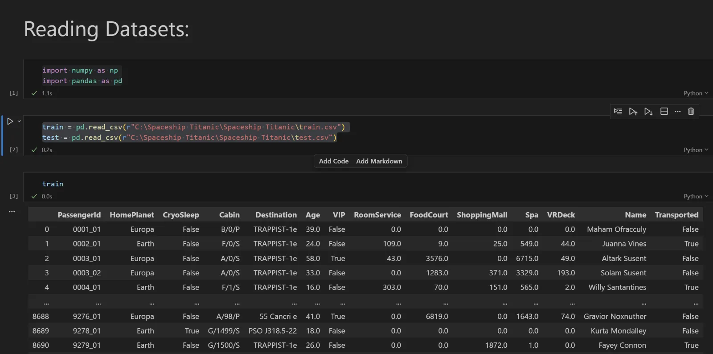

Hi, It's Hudson
I'm a Python Dev building AI products that ship.
- Python
- Data Analysis
- AI/ML
- Full Stack Dev
About Me
I’m Hudson, a Python and AI developer based in Bengaluru. I build full-stack products—from backend architecture and AI integrations to the interfaces people actually touch. My flagship project, Hero’s AI, is a live multi-model AI platform. I love turning ideas into products that work reliably and feel great to use.
Featured Projects
Real deployed software solving multi-model AI, vector RAG, and full-stack challenges.
Hero's AI
One AI assistant that picks the right brain for every question.
A production-ready AI platform powered by Django and Python. Its intelligent Baymax dispatcher classifies incoming queries via an NLP intent router before routing to the optimal LLM with an automatic Gemini → OpenRouter → Groq fallback chain and concurrent fast mode racing.
Infinsight
Upload data files. Ask questions in plain English.

Kaggle MLSpaceship Titanic
Optimized weighted ensemble of 8 algorithms for binary classification.
EpicOutlet
Modern online storefront with tool-calling AI Shop-Bot assistant.
Technical Matrix
Engineered with production-grade Python, multi-model AI, and robust database architectures.
AI & LLM Orchestration
Multi-model fallback chains, pre-LLM NLP intent classification, vector RAG embeddings, and thread-pool concurrency racing.
Python & Django Backend
Scalable web backends, RESTful APIs, database schema modeling, secure auth sessions, and Fernet encryption for credentials.
Data Analytics & Machine Learning
Vectorized data manipulation in Pandas, statistical EDA, multi-algorithm weighted ensembles, and sandboxed code execution.
Languages & Frameworks
AI Systems & LLMs
Data Science & ML
Databases & DevOps
Professional Working Style
Progressed from a basic Django prototype to building vector RAG, tool-calling agents, and multithreaded fast-mode racing within a single flagship project.
Eliminated slow sequential API fallback bottlenecks by racing multiple models via Python thread pools, slashing user response latency by up to 75%.
Pairs technical backend logic with aesthetic UI empathy—designing applications that are both robust under the hood and clean to interact with.
Deploys, monitors, and maintains real production platforms with live users and encrypted credentials instead of stopping at localhost code demos.
Hands-on Experience
Real production features, backend logic, and agile requirements.
Full Stack Developer Intern
Postulate
About the role
Worked across the full stack on real application features. The internship showed me how professional software projects run: requirements arrive, features get built, bugs get fixed, and the application has to keep working smoothly in production.
- Built frontend features and connected them to backend logic.
- Implemented backend functionality for the application.
- Maintained and improved existing features.
- Turned real project requirements into working, tested code.
- Writing code is only part of the job. Reading existing codebases, communicating clearly, and resolving issues matter just as much.
- Features need to work for real users, not just on a local development machine.
- Maintenance and testing are as important as building new things from scratch.
From classroom code to live products
Hover to auto-scroll or drag through the key milestones of my journey.
Graduated with a BCA
Don Bosco College of Arts & Science, Tuticorin
Finished my Bachelor of Computer Applications with a solid base in programming, databases, and web development, plus a habit of building things on my own.
Full Stack Intern at Postulate
Postulate
My first taste of real project work. Built frontend and backend features, helped maintain applications, and learned to work from actual client requirements, not tutorials.
Pyspider, Python with Data Science
Bengaluru
Joined Pyspider in Bengaluru to go deeper into Python, data science, and AI. Now working with Pandas, NumPy, visualization, and machine learning models that feed directly into my production builds.
EpicOutlet & Spaceship Titanic
Full-Stack & Machine Learning
Engineered EpicOutlet (Django e-commerce with AI tool-calling shopping bot) and a weighted machine learning ensemble for the Spaceship Titanic Kaggle challenge.
Hero's AI goes live
Flagship Multi-Model Platform
Expanded a Django prototype into a live multi-model AI platform featuring Infinsight (RAG data analyst), Zeno (Chrome/Edge extension), and interruptible voice mode.
A team where I can grow
Looking Ahead
Ready to join an engineering team building intelligent, data-driven products, where I can contribute from day one and continually learn from senior builders.
My Learning Journey
Formal computer science foundations united with applied production-level AI specialization.
Bachelor of Computer Applications (BCA)
Don Bosco College of Arts & Science, Tuticorin
Programming & DSA
Data structures, algorithm complexity, object-oriented design, and foundational software engineering principles.
Relational DBMS & SQL
Database schema normalization, complex queries, transactions, and robust data integrity models.
Web & Systems
Client-server protocols, operating systems, and building functional applications from scratch.
College is where I started learning by building. Instead of only studying theory for exams, I turned concepts into working applications—a habit that directly inspired the architectural creation of Hero's AI.
Python, Data Science & Machine Learning
Pyspider, Bengaluru
Python Architecture
Advanced OOP, multithreaded concurrency with ThreadPoolExecutor, decorators, and production patterns.
Data Analytics & Vectorization
Exploratory data analysis (EDA), cleaning messy data, and high-performance processing in Pandas & NumPy.
Machine Learning Pipelines
Feature engineering, model tuning, cross-validation, and weighted ensemble blending across Scikit-learn, TensorFlow, and XGBoost.
Immediately translated these competencies into production: engineered the 8-algorithm weighted ensemble for Kaggle's Spaceship Titanic, and built Infinsight—a RAG data analyst that converts natural language into executed Pandas code.
What I can build for you
From idea to a deployed product, one developer who handles the AI, the backend and the interface.
AI Chatbot & LLM App Development
Assistants that actually use your data.
What you get
- A chatbot or AI assistant for your website, app or team.
- Answers based on your own documents (RAG), not guesses.
- Multi-model setup with automatic fallback, so one failing model doesn’t break the app.
- Optional voice mode, web search and file upload.
Python & Django Backend Development
Solid backends that keep your app running.
What you get
- REST APIs and database-driven features.
- Secure login (email/password or Google OAuth).
- Clean database design in PostgreSQL or MySQL.
- Deployment with Gunicorn and WhiteNoise on platforms like Render or AlwaysData.
Data Analysis & Machine Learning
Turn messy data into clear answers.
What you get
- Data cleaning and exploratory analysis (EDA).
- Charts and insights using Pandas, Matplotlib and Seaborn.
- Data reporting in Excel.
- Machine learning models for prediction, with clear evaluation.
Frontend & UI Design
Clean, responsive interfaces people enjoy using.
What you get
- Responsive pages that work seamlessly on phones and desktops.
- UI concepts, layouts and consistent modular components.
- Graphics, illustrations and coherent branding visuals.
How I work
Understand
We talk through your idea, constraints, and target outcomes.
Plan
I outline core features, architectural tech stack, and clear timeline.
Build
I share functional progress early, so you can test and give feedback.
Deploy
I launch it live, configure environments, and hand over the codebase.
Improve
I resolve edge cases and refine features based on real usage.
Open to Opportunities
Fresher, project-ready and eager to contribute from day one.
Roles I'm Looking For
- Python Developer
- AI/ML Developer
- Data Analyst or Junior Data Scientist
- Backend Developer (Django)
- Full Stack Developer (Python)
- Software Engineer
Preferences
What You Get With Me
- A developer who has already deployed real AI products to production.
- Hands-on RAG, LLM orchestration, and vector search experience.
- A quick learner who can also handle UI aesthetics and visual design.
Beyond Code
What I do when I'm not at my keyboard writing Python.
Design & Creativity
I draw, design and edit. Graphic design, digital illustration, photo editing and video editing came before coding for me. They taught me composition, visual hierarchy and user empathy, which directly shape how I design clean, intentional interfaces with natural product flow.
Curiosity
I love exploring emerging tech, deconstructing tools to see how they work under the hood, and experimenting with new ideas. Whether reverse-engineering complex APIs or building prototypes from scratch, hands-on exploration is how I continually expand what I can create.
"Code is how I build. Design and stories are why I build."
Frequently Asked Questions
Quick answers about my background, projects, and availability.
Python development with a focus on AI integrations, backend systems and data work. I also build frontends, so I can deliver a full product from database to user interface.
Yes, I’m a 2025 graduate. I interned as a Full Stack developer at Postulate, and I’ve built and deployed live production projects such as Hero’s AI and EpicOutlet.
It’s an AI assistant platform that chooses the best AI model for each request, handles voice and files, and can analyse your spreadsheets through Infinsight without writing code.
Yes. I can build chatbots that use your own documents (RAG) and connect directly to your live product catalog, like the Shop-Bot in EpicOutlet.
Python, Django, SQL, HTML, CSS, Pandas, scikit-learn, TensorFlow, PostgreSQL, Pinecone, Groq, and Gemini.
Yes. I do UI concepts, graphic design, illustration and photo/video editing, which helps me make functional apps look and feel polished.
Yes, I’m open to both, with a preference for hybrid roles in Bengaluru, Chennai or Coimbatore.
Use the contact form below, email me at hudsonmathew2004@gmail.com, or message me directly on LinkedIn. I reply within 24 hours.
Have a specific technical question?
Ask Huddy, my AI assistant. He knows my architecture, models, fallbacks, and stack in full detail.
Get In Touch
Have an open role, an AI project idea, or want to discuss software engineering? Let's talk.
Actively Interviewing & Open to Work
Fresher, project-ready Python & AI developer. Seeking full-time or internship opportunities.